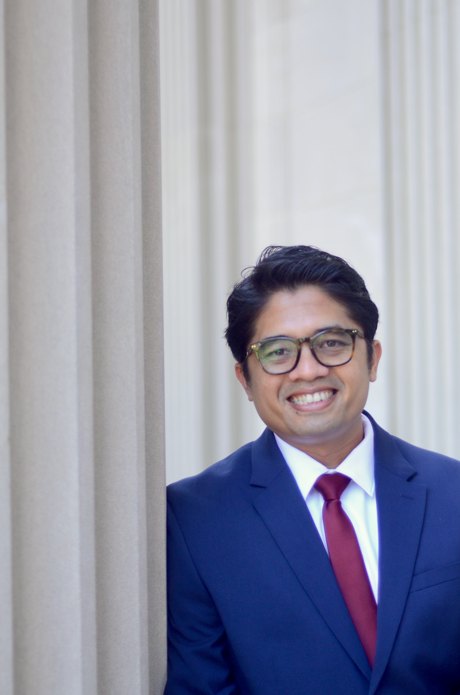

Assistant Professor & Head of Research and Publication
UIN Sultanah Nahrasiyah Lhokseumawe, Indonesia
Ph.D. in Global History
University of North Carolina at Chapel Hill, 2023
baiquni@uinsuna.ac.id
Salam! Welcome!
I am a global historian passionate about unpacking the rich, interconnected stories of Modern Muslim Societies in Southeast Asia. Right now, I spend my days teaching as an Assistant Professor and heading up the Research and Publication team at Universitas Islam Negeri (UIN) Sultanah Nahrasiyah Lhokseumawe in Aceh, Indonesia. At its core, my work looks at how fascinating historical threads connect directly to the global issues we see in the news today.
I wrapped up my Ph.D. in Global History at the University of North Carolina at Chapel Hill in 2023. My doctoral project traced how local Islamic and Southeast Asian leaders actively tried to rewrite unfair global rules and build their own visions of a fairer world between 1873 and 1950. Rather than focusing on abstract theories, I prefer grounding history in real, messy human evidence and material culture.
Things I'm Curious About & Researching
- Global Islamic Networks: Tracking the vibrant diplomatic, trade, and cultural connections that tied Southeast Asia (especially the old Aceh Sultanate) to the Ottoman Empire and beyond.
- Rethinking Anti-Colonial History: Looking past standard textbooks to view struggles like the Acehnese Perang Sabil as highly sophisticated intellectual movements that challenged Eurocentric global orders.
- Gender & Everyday Spaces: Investigating how local environments change over time, specifically how women navigate civic and public spaces like coffee shops in post-conflict Aceh.
Democratizing Knowledge: The Instagram Project
Reading Trouillot's Silencing the Past in graduate school inspired me. He said that impactful history is produced outside the "ivory tower". Thus today, in my spare time, I extract a portion of high-level scholarly works and turn it into accessible public history.
“Trouillot showed me that history truly lives in public spaces. This project takes dense academic papers, archival records, and decolonial critiques, breaking them down into highly visual, digestible slide-carousels.”
By turning complex historiographies into a short carousel post on my instagram, I help students, history buffs, and the broader public engage with critical scholarship right on their daily feeds.